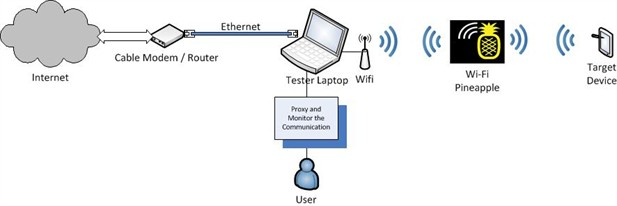
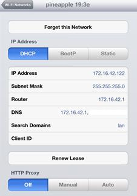
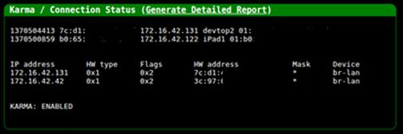
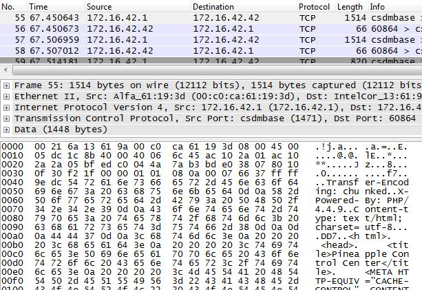

Every security professional has to Man-in-the-Middle (MitM) network communication at some point in their career. This can be challenging in situations where the device or application does not allow the user to specify a proxy server. The only way to monitor this sort of communication is to intercept the traffic flowing through the device's Internet connection, most commonly a wireless Access Point (AP). Getting this setup working correctly can be difficult, as it depends on a number of factors, including having the right hardware and properly configured software. There are various blog posts which demonstrate how to create an AP and set up a DHCP server, but few go into the nitty-gritty details of the entire process for middling network communication.
This blog article details the steps I took to create this setup in order to perform MiTM analysis on a custom black-box device. For my setup, I used Ubuntu and the Wi-Fi Pineapple.
What is the Wi-Fi Pineapple?
You can think of the Pineapple as a highly configurable router. It sets up a wireless AP and a DHCP server. My reasons for choosing the Pineapple were for its compatible hardware and easy to use software configurations; both of which are necessary for setting up a working AP. The Pineapple is built using the Atheros AR9331 chipset supporting Master mode and uses OpenWRT for setting up the 802.11 b/g/n wireless router. Out of the box, the Pineapple has a number of tools which help in wireless security testing and penetrations tests such as Karma, DNSSpoof, and URLSnarf among others. All of these are controlled via a web application which is accessible on the Pineapple. These tools and features can also be accessed via SSH. The current version is Mark IV and is sold for only $99.99, so the Pineapple is a cheap and easy to use device for wireless assessments.
How to Man-in-the-Middle Communication using a Pineapple
Now that you know what the Pineapple is, we'll look at how to use it to MiTM network traffic.
The diagram below represents my setup to MitM network traffic between a device and a server on the Internet which can be understood as:
- The testing laptop is connected to the Internet via the Ethernet port.
- The testing laptop is also connected to the Pineapple via the Wi-Fi adapter.
- The target device is configured to talk to the Pineapple.
- All monitoring and interception happens on the testing laptop.

Note: You can modify this setup to suit your needs, e.g. connect the Pineapple to the laptop via the Ethernet port and connect the laptop to the Internet via Wi-Fi.
Step 1: Setting up the AP and DHCP service
Since the Pineapple sets up an AP and a DHCP server out of the box, our task of setting up a working AP is handled by the Pineapple itself. The default AP created by the Pineapple is called pineapple 19:3e. It also has an IP address of 172.16.42.1 and leases IP addresses in the range of 172.16.42.0/25. The adjacent screenshot of an iPad (used for demonstration) connected to the Pineapple depicts this information. You can change these settings by SSHing into the Pineapple and by modifying its configurations.

You can now connect a device to the AP created by the Pineapple; however, the device will not be able to connect to the Internet because we haven't connected the Pineapple to the Internet. To do that, we'll need to set up Internet Connection Sharing (ICS) on our laptop by forwarding all traffic from the Pineapple's Wi-Fi adapter to its Ethernet adapter (or vice versa depending on your setup). Then, we'll be able to monitor and intercept the traffic flowing through the Pineapple.
Step 2: Configuring the Pineapple to connect to the Internet (Setting up ICS)
We can set up ICS with a bit of networking and IPTables magic. Enabling ICS between the two physical interfaces (i.e. Ethernet and Wi-Fi adapter on the tester's laptop) involves the following steps:
Enabling IP Forwarding.
Creating a route between the interfaces for forwarding the network traffic.
Routing network traffic between the interfaces through a proxy via IPTables.
This task of setting up ICS is again made easy by the Pineapple. There is a script called wp4.sh available from the Pineapple website which sets up the ICS between the interfaces. A full list of commands is available towards the end of the article which includes the commands from the wp4.sh script in addition to a few others to MiTM network traffic. For the wp4.sh script to execute successfully, you will need some knowledge of the network configuration of your system. You can get this information by running ifconfig on the laptop. Download the script from the website and execute it inputting the necessary configuration so that it executes successfully as seen in the screenshot below.

Once you have ICS configured, the device connected to the Pineapple will be able to access the Internet. As mentioned earlier, the Pineapple comes with a plethora of tools which can be managed via a web interface. This web interface also lists all the devices that are connected to it and also has a logging functionality which can be really useful.

You can also monitor the traffic flowing through the Pineapple using packet capture software such as Wireshark by sniffing on the Wi-Fi adapter of the laptop.

Now that you can monitor the network traffic flowing through the Pineapple, let's look at how to send this traffic to a proxy server so that we can actively modify the data flowing across the wire.
Step 3: Routing network traffic through a proxy server via IPTables
If we were using a device such as an iPad for MitM communication this would have been easy; just add a proxy server to the network settings of the device and you would be in the middle of the network communication. However, since we cannot modify or set the proxy settings on a non-proxy aware device our task is a little more complicated. We can use IPTables rules to MitM the network communication flowing from such a device through the Pineapple. The following IPTables rules will redirect all traffic for ports 80 and 443 to port 8080.
iptables -t nat -I PREROUTING -p tcp --dport 80 -j REDIRECT --to-ports 8080
iptables -t nat -I OUTPUT -p tcp -d 127.0.0.1 --dport 80 -j REDIRECT --to-ports 8080
iptables -t nat -I PREROUTING -p tcp --dport 443 -j REDIRECT --to-ports 8080
iptables -t nat -I OUTPUT -p tcp -d 127.0.0.1 --dport 443 -j REDIRECT --to-ports 8080
We can now have a proxy server running on the loopback (127.0.0.1) interface of the laptop and intercept traffic on port 8080. Using this setup we can make changes to the network traffic on the fly as shown in the screenshot below (where the iPad is used just for demonstration):
Note:Intercepting SSL traffic from the embedded device could be a little tricky and difficult based on the security configuration of the device. You will have to install a SSL certificate (from the proxy server) into the trusted root store of the device. This procedure will be device specific.
The example above redirects HTTP. If you're not sure what the device is talking, using the packet capture software to determine the ports, and redirect the correct ones. Make sure that the proxy server can handle the protocol used by the device; Burp is an HTTP proxy whereas Canape, Mallory and tcpprox can intercept raw TCP communication.
Conclusion
It's much easier to MitM the network communication of opaque devices than it may seem.
The complete list of commands to MitM network traffic using the Pineapple is listed below. These commands have been taken from the wp4.sh script of the Pineapple and include the additional IPTables rules for proxying the network communication on ports 80 and 443 by redirecting it to port 8080. Replace the variables with your setup's configuration data.
#Setup the Configurations
pineapplenetmask=255.255.255.0 # Default netmask for /24 network
pineapplenet=172.16.42.0/24 # Pineapple network. Default is 172.16.42.0/24
pineapplelan=XXX # Interface of Ethernet cable connected to the laptop
pineapplewan=XXX # Interface of the Pineapple connected to the laptop
pineapplegw=XXX # The IP of the Internet Gateway
pineapplehostip=XXX #IP Address of host computer
pineappleip=172.16.42.1 # IP Address of the pineapple
#Bring up Ethernet Interface directly connected to Pineapple
ifconfig $pineapplelan $pineapplehostip netmask $pineapplenetmask up
#Enable IP Forwarding
echo '1' > /proc/sys/net/ipv4/ip_forward
#Clear the IPTables Chains and Rules
iptables -X
iptables -F
#Setup IP Forwarding
iptables -A FORWARD -i $pineapplewan -o $pineapplelan -s $pineapplenet -m state --state NEW -j ACCEPT
iptables -A FORWARD -m state --state ESTABLISHED,RELATED -j ACCEPT
iptables -A POSTROUTING -t nat -j MASQUERADE
#Remove the Default Route
route del default
#Add a new Default Gateway
route add default gw $pineapplegw $pineapplewan
#Modify the IPTables to enable proxying
iptables -t nat -I PREROUTING -p tcp --dport 80 -j REDIRECT --to-ports 8080
iptables -t nat -I OUTPUT -p tcp -d 127.0.0.1 --dport 80 -j REDIRECT --to-ports 8080
iptables -t nat -I PREROUTING -p tcp --dport 443 -j REDIRECT --to-ports 8080
iptables -t nat -I OUTPUT -p tcp -d 127.0.0.1 --dport 443 -j REDIRECT --to-ports 8080
Troy Hunt has a nice blog article on his site which shows you how to MitM network communication using the Pineapple and Windows.
Now that you know how to MitM network traffic, Happy Hacking!
P.S.: If you want to learn more about testing back-box embedded devices come watch our Turbo Talk at Black Hat where Jonathan Chittenden and I will be talking about how we went about testing Twine. The presentation will give insight into performing black-box analysis of an embedded system - for fun, for research, or for profit. You will have a better understanding of where things can go wrong, how to fix them and how to proceed from there. Further, individuals charged with designing and building similar devices will understand how to design such devices with better security. The presentation will contain information that will be beneficial to designers, builders, breakers, defenders and users alike.